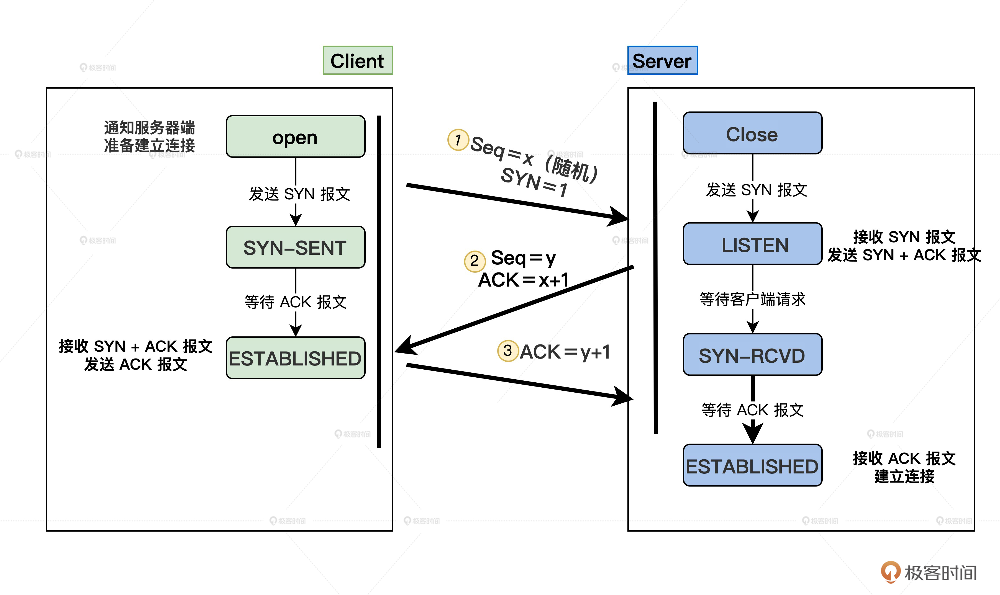
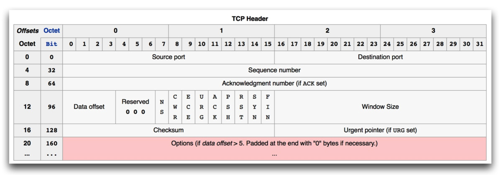
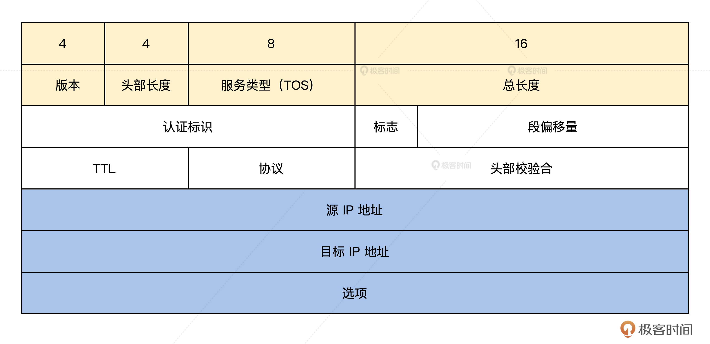
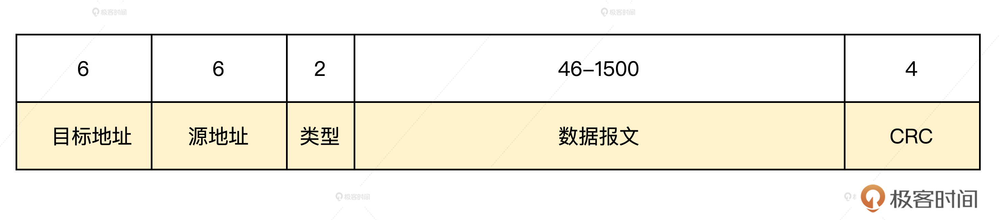
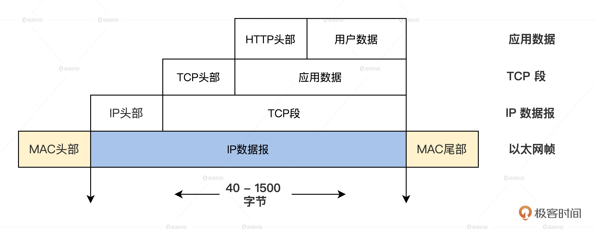

- 00 开篇词 为什么要学写一个操作系统？.md.html
- 00 编辑手记 升级认知，迭代自己的操作系统.md.html
- 01 程序的运行过程：从代码到机器运行.md.html
- 02 几行汇编几行C：实现一个最简单的内核.md.html
- 03 黑盒之中有什么：内核结构与设计.md.html
- 04 震撼的Linux全景图：业界成熟的内核架构长什么样？.md.html
- 05 CPU工作模式：执行程序的三种模式.md.html
- 06 虚幻与真实：程序中的地址如何转换？.md.html
- 07 Cache与内存：程序放在哪儿？.md.html
- 08 锁：并发操作中，解决数据同步的四种方法.md.html
- 09 瞧一瞧Linux：Linux的自旋锁和信号量如何实现？.md.html
- 10 设置工作模式与环境（上）：建立计算机.md.html
- 11 设置工作模式与环境（中）：建造二级引导器.md.html
- 12 设置工作模式与环境（下）：探查和收集信息.md.html
- 13 第一个C函数：如何实现板级初始化？.md.html
- 14 Linux初始化（上）：GRUB与vmlinuz的结构.md.html
- 15 Linux初始化（下）：从_start到第一个进程.md.html
- 16 划分土地（上）：如何划分与组织内存？.md.html
- 17 划分土地（中）：如何实现内存页面初始化？.md.html
- 18 划分土地（下）：如何实现内存页的分配与释放？.md.html
- 19 土地不能浪费：如何管理内存对象？.md.html
- 20 土地需求扩大与保障：如何表示虚拟内存？.md.html
- 21 土地需求扩大与保障：如何分配和释放虚拟内存？.md.html
- 22 瞧一瞧Linux：伙伴系统如何分配内存？.md.html
- 23 瞧一瞧Linux：SLAB如何分配内存？.md.html
- 24 活动的描述：到底什么是进程？.md.html
- 25 多个活动要安排（上）：多进程如何调度？.md.html
- 26 多个活动要安排（下）：如何实现进程的等待与唤醒机制？.md.html
- 27 瞧一瞧Linux：Linux如何实现进程与进程调度_.md.html
- 28 部门分类：如何表示设备类型与设备驱动？.md.html
- 29 部门建立：如何在内核中注册设备？.md.html
- 30 部门响应：设备如何处理内核I_O包？.md.html
- 31 瞧一瞧Linux：如何获取所有设备信息？.md.html
- 32 仓库结构：如何组织文件_.md.html
- 33 仓库划分：文件系统的格式化操作.md.html
- 34 仓库管理：如何实现文件的六大基本操作？.md.html
- 35 瞧一瞧Linux：虚拟文件系统如何管理文件？.md.html
- 36 从URL到网卡：如何全局观察网络数据流动？.md.html
- 37 从内核到应用：网络数据在内核中如何流转.md.html
- 38 从单排到团战：详解操作系统的宏观网络架构.md.html
- 39 瞧一瞧Linux：详解socket实现与网络编程接口.md.html
- 40 瞧一瞧Linux：详解socket的接口实现.md.html
- 41 服务接口：如何搭建沟通桥梁？.md.html
- 42 瞧一瞧Linux：如何实现系统API？.md.html
- 43 虚拟机内核：KVM是什么？.md.html
- 44 容器：如何理解容器的实现机制？.md.html
- 45 ARM新宠：苹果的M1芯片因何而快？.md.html
- 46 AArch64体系：ARM最新编程架构模型剖析.md.html
- LMOS来信：第二季课程带你“手撕”计算机基础.md.html
- 大咖助场 以无法为有法，以无限为有限.md.html
- 用户故事 yiyang：我的上机实验“爬坑指南”.md.html
- 用户故事 成为面向“知识库”的工程师.md.html
- 用户故事 技术人如何做选择，路才越走越宽？.md.html
- 用户故事 操作系统发烧友：看不懂？因为你没动手.md.html
- 用户故事 用好动态调试，助力课程学习.md.html
- 用户故事 艾同学：路虽远，行则将至.md.html
- 结束语 生活可以一地鸡毛，但操作系统却是心中的光.md.html
- 捐赠
36 从URL到网卡：如何全局观察网络数据流动？
你好，我是 LMOS。
从这节课起，我们就要开始学习网络篇的内容了。网络是一个极其宏大的知识结构，我会通过五节课带你了解计算机网络的关键内容。
具体我们是这样安排的。作为网络篇的开始，今天这节课我会从一个面试中高频出现的问题切入，带你梳理从输入URL到网卡的网络数据流动过程中都发生了什么事。如果你真正理解了这个过程，相信你对整个网络架构的认知也会有质的飞跃。
网络篇的第二节课，我会带你分析网络数据包在内核中如何流转；第三节课，我们一起探讨互联网架构演进过程，并动手做一次协议栈移植；最后两节课，我还是照例带你看看Linux，让你理解套接字在Linux内核中怎样实现。
从一道经典面试题说起
下面我们一起来看看一个问题，估计你多多少少会觉得熟悉。
输入URL，从一个请求到响应都发生了什么事？
没错，这是一道非常经典的面试题，你在网上随便一搜，也会找到各种各样的资料解答这道题。
不过啊，那些答案都有一些笼统，今天我会尽量详细地为你梳理一下这个过程。跟着我学完这节课，你就能明白，为什么面试官对这道题青睐有加了。
这里我先给你概括一下全过程，让你有个整体印象。
1.常规的网络交互过程是从客户端发起网络请求，用户态的应用程序（浏览器）会生成HTTP请求报文、并通过DNS协议查找到对应的远端IP地址。- 2.在套接字生成之后进入内核态，浏览器会委托操作系统内核协议栈中的上半部分，也就是TCP/UDP协议发起连接请求。- 3.然后经由协议栈下半部分的IP协议进行封装，使数据包具有远程定位能力。- 4.经过MAC层处理，找到接收方的目标MAC地址。- 5.最终数据包在经过网卡转化成电信号经过交换机、路由器发送到服务端，服务端经过处理拿到数据，再通过各种网络协议把数据响应给客户端。- 6.客户端拿到数据进行渲染。- 7.客户端和服务端之间反复交换数据，客户端的页面数据就会发生变化。
你有没有发现，刚才的过程中，我们提到了多个层级和网络协议，那么网络为什么要分层呢？网络协议又是什么呢？请听我给你一一道来。
前置知识：网络分层和网络协议
在计算机网络时代初期，各大厂商推出了不同的网络架构和标准，为统一标准，国际标准化组织ISO推出了统一的OSI参考模型。
当前网络主要遵循的IEEE 802.3标准，就是基于OSI模型提出的，主要定义的是物理层和数据链路层有线物理数据流传输的标准。
那么问题来了，网络为什么要分层呢？
我们都知道网络是复杂的。对于复杂的问题，我们自然要通过分层处理简化问题难度，降低复杂度，由于分层后的各层之间相互独立，我们可以把大问题分割成小问题。同样，分层也保证了网络的松耦合和相对的灵活，分层拆分后易于各层的实现和维护，也方便了各层的后续扩展。
网络分层解决了网络复杂的问题，在网络中传输数据中，我们对不同设备之间的传输数据的格式，需要定义一个数据标准，所以就有了网络协议。
网络协议是双方通信的一种约定，以便双方都可以理解对方的信息。接下来我们就用OSI协议体系中广泛应用的TCP/IP层的体系结构来分析整个过程，你重点需要关注的是数据处理的过程和网络协议。

发起请求阶段（应用层）
下面我们首先来看看网络应用层，它是最上层的，也是我们能直接接触到的。
我们的电脑或⼿机使⽤的应⽤软件都是在应⽤层实现，所以应⽤层只需要专注于为⽤户提供应⽤功能，不⽤去关⼼数据是如何传输的。你可以这样理解，应⽤层是⼯作在操作系统中的⽤户态。
我们依然从浏览器中输入URL，开始了解网络应用层的工作流程。
用户输入：在浏览器中输入URL
我们在浏览器中输入URL的时候，浏览器已经开始工作了。浏览器会根据我们的输入内容，先匹配对应的URL以及关键词，给出输入建议，同时校验URL的合法性，并且会在URL前后补全URL。
为了帮你更好地理解，我给你举个例子说明。我们以输入cosmos.com为例，首先浏览器会判断出这是一个合法的URL，并且会补全为http://www.cosmos.com。
其中http为协议，cosmos.com为网络地址，每个网络栏的地址都符合通用 URI 的语法。URI 一般语法由五个分层序列组成。后面的第一行内容我给你列了URL的格式，第二行做了行为说明。
URI = scheme:[//authority]path[?query][#fragment]
URI = 方案:[//授权]路径[?查询][#片段ID]
接着，浏览器从URL中会提取出网络的地址，也叫做主机名（host），一般主机名可以为域名或IP地址，此处使用域名。
对URL进行解析之后，浏览器确定了服务器的主机名和请求路径，接下来就是根据这些信息来生成HTTP请求消息了，那么到现在为止，我们的HTTP请求是否已经发出了呢？并不是这样的，我们接着往下看。
网络请求前：查看浏览器缓存
浏览器在HTTP报文生成完成后，它并不是马上就开始网络请求的。
在请求发出之前，浏览器首先会检查保存在本地计算机中的缓存，如果访问过当前的URL，会先进入缓存中查询是否有要请求的文件。此时存在的缓存有路由器缓存、DNS缓存、浏览器缓存、Service Worker、Memory Cache、Disk Cache、Push Cache、系统缓存等。
在这里我们看一下系统缓存，如果在浏览器缓存里没有命中缓存，浏览器会做一个系统调用获得系统缓存中的记录，就是我们的gethostbyname方法，它的作用是通过域名获取IP地址。这个方法会返回如下结构。
struct hostent
{
char *h_name;// 主机的别名.www.cosmos.com就是google他自己的别名
char **h_aliases;// 主机ip地址的类型，到底是ipv4(AF_INET)，还是pv6(AF_INET6)
int h_addrtype;// 主机ip地址的长度
int h_length;// 主机ip地址的长度
char **h_addr_list; // 主机的ip地址，注意，这个是以网络字节序存储的
#define h_addr h_addr_list[0] 这个函数，是将类型为af的网络地址结构src，转换成主机序的字符串形式，存放在长度为cnt的字符串中。返回指向dst的一个指针。如果函数调用错误，返回值是NULL
};
如果没有访问过当前的URL，就会跳过缓存这一步，这时我们就会进入网络操作了。
域名解析：DNS
接着上一小节在浏览器确认了输入的URL之前没有访问，浏览器就会生成对应的HTTP请求，这时浏览器需要委托操作系统将HTTP报文发送到对应的服务端。在发送消息之前，还有一个工作需要做，就是查找服务端的IP地址，因为操作系统在发送消息时，必须知道对方的IP地址才可以发送。
但是由于IP地址由一串数字组成，不够语义化，为方便你记忆，我们将IP地址映射为域名，于是就有这样一个服务，维护了IP和域名的映射关系，它就是非常重要的基础设施——DNS服务器。DNS服务器是一个分布式数据库，分布在世界各地。
为提高效率，DNS是按照一定的结构进行组织的，不同层次之间按照英文句点.来分割。
在域名中，我们的层级关系是按照从左到右、从低到高排列的，不同层级由低到高维护了一个树形结构，最高一级的根节点为root节点，就是我们所谓的根域名服务器，因此cosmos.com完整的域名应该是cosmos.com.，后面的 .相当于.root。
但是所有域名的顶级域名都一样，因此被省略；再下一级.com为顶级域名；再下一级的cosmos为权威域名。
因为这是一个树形结构，所以客户端只要请求到一个DNS服务器，就可以一层层递归和迭代查找到所有的DNS服务器了。按照由高到低的优先级，DNS域名解析的过程排列如下。
DNS解析 > 浏览器DNS缓存 > hosts文件 > 本地DNS服务器 > ISP DNS服务器
操作系统协议栈（传输层和网络层）
现在我们已经根据URL拿到需要请求的唯一地址了，接下来就要委托操作系统将HTTP报文发送出去了，这个过程由操作系统中的协议栈负责处理。
TCP/IP协议栈是现在使用最广泛的网络协议栈，Internet就是建立在TCP/IP协议栈基础上的。除TCP/IP协议栈外，我们的操作系统内核可以支持多个不同的协议栈，如后续我们将会用到的LwIp。
协议栈内部分为几部分，分别承担着不同的作用。协议栈的上半部分负责和应用层通过套接字（Socket）进行交互，它可以是TCP协议或UDP协议。应用层会委托协议栈的上部分完成收发数据的工作；而协议栈的下半部分则负责把数据发送给到指定方的IP协议，由IP协议连接下层的网卡驱动。
可靠性传输：建立TCP连接
浏览器通过DNS解析拿到Cosmos的 IP地址后， 浏览器取出 URL 的端口（HTTP默认80，HTTPS默认443）。随即浏览器会委托操作系统协议栈的上半部分创建新的套接字（Socket）向对应的IP发起 TCP 连接请求。
为了确保通信的可靠性，建立TCP首先会先进行三次握手的操作，我们可以结合后面的图示理解。

那么TCP的三次握手操作，是如何进行的呢？具体的操作步骤如下。
1.首先浏览器作为客户端会发送一个小的TCP分组，这个分组设置了一个特殊的 SYN 标记，用来表示这是一条连接请求。同时设置初始序列号为 x 赋值给 Seq （这次捕获组的数据为: SYN=1, Seq=1）。-
2.服务器接受到客户端的 SYN 连接后，会选择服务器初始序号 y。同时向客户端发送含有连接确认（SYN+ACK）、Seq=0（本例中的服务器初始序号）、Ack=1（客户端的序号x +1）等信息的 TCP 分组。-
3.客户端收到了服务器的确定字段后，向服务器发送带有 ACK=1、Seq=1 (x+1)、Ack=1 （服务器 Ack 信息的拷贝）等字段的TCP分组给服务器。
即使是发送一个TCP分组，也是一次网络通信，那么对于TCP层来说，这一次通信的数据前面就要包含一个TCP包头，向下层表明这是个TCP数据包。TCP包头其实是一个数据结构，我为你准备了一幅图，以便理解。
下图就是TCP的包头，对于TCP头部来说，以下几个字段是很重要的，你要格外关注。

首先，源端口号（Source port）和目标端口号（Destinantion port）是不可少的，如果没有这两个端口号，数据就不知道应该发给哪个应用。
其次，你需要注意的是一串有序数字Sequence number，这个序号保证了TCP报文是有序被接受的，解决网络包的乱序问题。
之后的Acknowledgement number是确认号，只有对方确认收到，否则会一直重发，这个是防止数据包丢失的。
紧接着还有一些状态位，由于TCP是有状态的，是用于维护双方连接的状态，状态发生变更会更新双方的连接状态。后面还有一个，窗口大小Window Size，用于流量控制。
TCP层封装好了数据包，会将这个TCP数据包向下层发送，而TCP层的下层就是IP层，下面我们一起去瞧一瞧完成目的地定位的IP层。
目的地定位：IP层
TCP在维护状态的过程中，都需要委托IP层将数据封装，发送和处理网络数据包进入网络层。IP协议是TCP/IP协议栈的核心，IP协议中规定了在Internet上进行通信时应遵循的规则，包括IP数据包应如何构成、数据包的路由等，而IP层实现了网络上的点对点通信。
我们首先来看看IP层处理上层网络数据包的过程，网络数据包（无论输入数据包还是输出数据包）进入网络层后，IP层协议的函数都要对网络数据包做后面这5步操作。
1.数据包校验和检验- 2.防火墙对数据包过滤- 3.IP选项处理- 4.数据分片和重组- 5.接收、发送和前送
为了完成上述操作，IP 层被设计成三个部分，分别是 IP 寻址、路由和分包组包。现在我们并不关注这三个部分的具体实现，仅仅是熟悉这个流程就好了。
其实在网络通信的过程中，每个设备都必须拥有自己的IP地址才可以完成通信，我们的IP地址是以四组八位的组合进行约定，每组以.号隔开，再转化为十进制的方式。这里要注意，IP地址并不是以主机数目进行配置的，而是根据网卡数来进行。
有了IP地址，就可以通信了，但IP层仍然是一个软件实现的功能逻辑层，那它如何完成通信呢，答案是不能直接完成通信，它只是把IP地址及相关信息组装成一个IP头，把这个IP头放在网络数据的前面，形成了IP包，最后把这个IP包发送给IP层的下一层组件就行了，IP头的格式如下所示。

有了IP头的网络数据，就有了发送目的地的信息，那么该如何才能将报文发送到目的地呢？这就要请MAC出场了，这个MAC层，就是IP层的下一层组件。下面我们一起进入MAC层。
点对点传输：MAC（链路层）
我们经常听说网卡MAC地址，这个MAC地址指的就是计算机网卡的物理地址（Physical Address），MAC地址被固化到网卡中，用来标识一个网络设备。MAC地址是唯一且无重复的，由国际标准化组织分配，用来确保网络中的每个网卡是唯一的。
网络数据在IP层中加上IP头后，形成了IP包，现在进入MAC层了，我们就需要对IP包加上MAC头，这个MAC头包括发送方的MAC头和接收方的MAC头，用于两个物理地址点对点的传输；此外还有一个头部字段为协议类型，在常规的TCP/IP协议中，MAC头的协议类型只有IP和ARP两种。
MAC头格式如下所示。

发送方的MAC头比较容易获取，读取当前设备网卡的MAC地址就可以获取，而接收方的MAC头则需要通过ARP协议在网络中携带IP地址，在一个网络中发送广播信息，这样就能获取这个网络中的IP地址对应的MAC地址，然后就能给我们的IP包加上MAC头了，最后这个加上MAC头的IP包，成为一个MAC数据包，就可以准备发送出去了。
下面我们一起进入最后的阶段，数据的发送，即网络层中的最低层——物理层。
电信号的出口：网卡（物理层）
现在我们拿到了经过层层处理过的数据包，数据包只是一串二进制数据，然而我们都知道，网络上的数据传送，是依赖电信号的，所以我们现在需要将数据包转化为电信号，才能在物理的网线上面传输。
那么数据包是如何被转换电信号的呢，数据包通过网络协议栈的层层处理，最终得到了MAC数据包，这个MAC数据包会交给网卡驱动程序，而网卡驱动程序会将MAC数据包写入网卡的缓冲区（网卡上的内存）.
然后，网卡会在MAC数据包的起止位置加入起止帧和校验序列，最后网卡会将加入起止帧和校验序列的MAC数据包转化为电信号，发送出去。
客户端服务端的持续数据交换（应用层）
现在，我们的数据终于通过网卡离开了计算机，进入到局域网，通过局域网中的设备，集线器、交换机和路由器等，数据会进入到互联网，最终到达目标服务器。
接着，服务器就会先取下数据包的MAC头部，查看是否匹配自己MAC地址。然后继续取下数据包的IP头，数据包中的目标IP地址和自己的IP地址匹配，再根据IP头中协议项，知道自己上层是TCP协议。
之后，还要继续取下数据包TCP的头。完成一系列的顺序校验和状态变更后，TCP头部里面还有端口号，此时我们的HTTP 的server正在监听这个端口号，就把数据包再发给对应的HTTP进程。
HTTP进程从服务器中拿到对应的资源（HTML文件），再交给操作系统对数据进行处理。然后再重复上面的过程，层层携带TCP、IP、MAC 头部。
接下来数据从网卡出去，到达客户端，再重复刚才的过程拿到相应数据。客户端拿到对应的HTML资源，浏览器就可以开始解析渲染了，这步操作完成后，用户最终就能通过浏览器看到相应的页面。
我为你画了两幅图，来描述上述过程，第一幅是网络协议各层之间封装与拆封数据的过程，如下所示。

下面的第二幅图，是描述客户端与服务器之间用网络协议连接通信的过程，如下所示。

我们可以看到，此时客户端和服务端之间通过TCP协议维护了一个连接状态，如果客户端需要关闭网络，那么会进行四次挥手，两边的网络传输过程至此完成。
重点回顾
好，这节课的内容告一段落了，我来给你梳理一下本节课的重点，如下所示。
1.首先，常规的网络交互过程是从客户端发起网络请求，网络数据包经过各类网络协议的处理，为了约定一套不同设备都能理解的约定，我们引入了网络协议。- 2.然后，在不同的网络协议处理下，给我们的网络数据包加上了各种头部，这保证了网络数据在各层物理设备的流转下可以正确抵达目的地。收到处理后的网络数据包后，接受端再通过网络协议将头部字段去除，得到原始的网络数据。- 3.最后，这节课你需要重点理解网络协议对数据的处理过程，以及处理过程中的不同协议的数据结构和关键头部字段。
思考题
我们这节课从宏观的角度分析了网络数据的运转，但是在内核中网络数据包怎么运转的呢？请你简单描述这个过程。
欢迎你在留言区跟我交流讨论，也欢迎你把这节课分享给你的同事、朋友。
我是LMOS，我们下节课见！
© 2019 - 2023 Liangliang Lee. Powered by gin and hexo-theme-book.